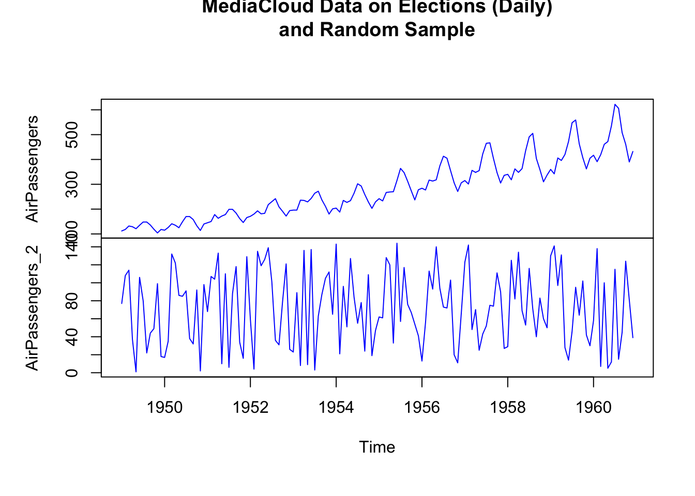
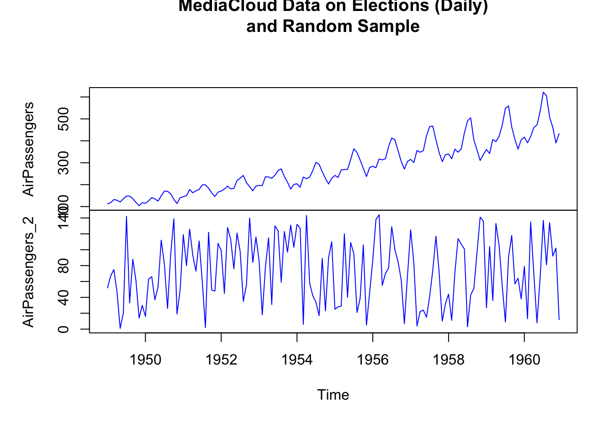

Chapter 8 Plot Many Time Series
You can also plot two time series together. This could be useful to have a look at their possible relations. The two time series must have the same starting date, the same ending date, and the same frequency.
In base R, the time series have to be merged in one “ts” object by using the function ts.union(). You can plot both the time series in the same plot, or create two different plot, by using the option “plot.type”.
AirPassengers_2 <- sample(x = length(AirPassengers))
AirPassengers_two_series <- ts.union(AirPassengers, AirPassengers_2)
plot.ts(AirPassengers_two_series,
main = "MediaCloud Data on Elections (Daily)\nand Random Sample",
col = c("blue", "red"),
lty=c(1, 1), lwd=c(1, 1),
plot.type = "single")
plot.ts(AirPassengers_two_series,
main = "MediaCloud Data on Elections (Daily)\nand Random Sample",
col = "blue",
lty=1, lwd=1,
plot.type = "multiple")
To plot the series with ggplot2, we can use a code like the following.
ggplot(elections_news) +
geom_line(aes(x = date, y = ratio), col = "black", size = 0.5) +
geom_line(aes(x = date, y = count/100000), col="red", size=0.5) +
ylab("News Articles") +
xlab("Date") +
ggtitle("MediaCloud Data on Elections (Daily)") 
p1 <- ggplot(elections_news) +
geom_line(aes(x = date, y = ratio), col = "black", size = 0.5) +
ylab("News Articles") +
xlab("Date") +
ggtitle("MediaCloud Data on Elections (Daily)")
p2 <- ggplot(elections_news) +
geom_line(aes(x = date, y = count), col="red", size=0.5) +
ylab("News Articles") +
xlab("Date") +
ggtitle("MediaCloud Data on Elections (Daily)")
gridExtra::grid.arrange(p1,p2)